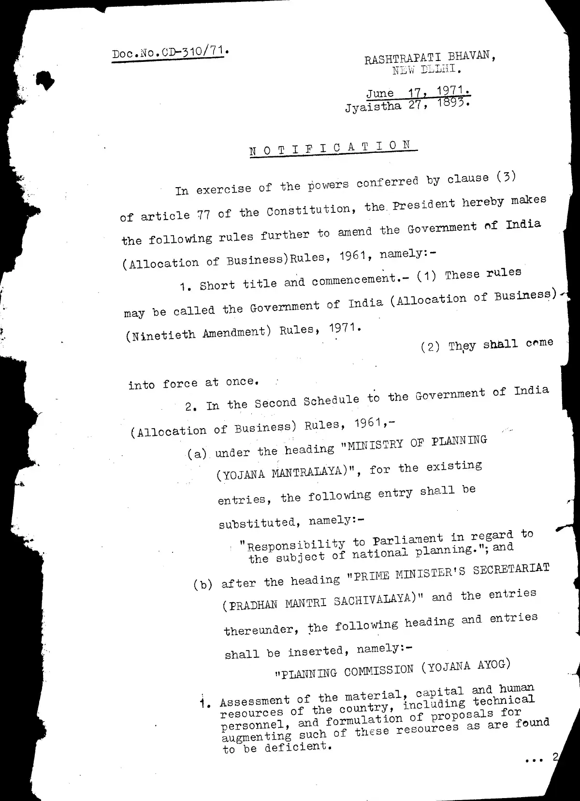
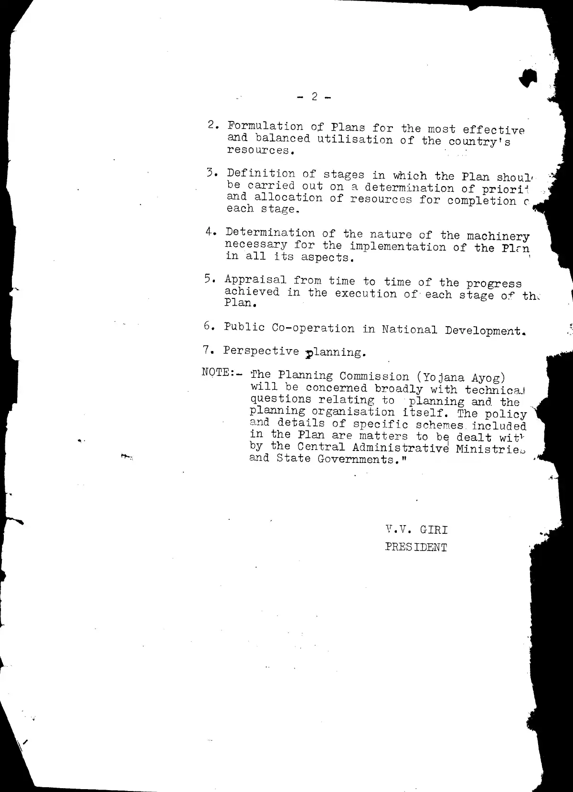

Amendment #90 (S.O. 2320, 1971)
2 changes: 0 to the First Schedule, 2 to the Second Schedule. 2 applied
What it did to the ministries
- spun offPlanning Commission is separated from Ministry of Planning (7 subjects) change 1, 2 · histories: Planning and Programme Implementation, Planning Commission
The order, page by page
Page 1 of 2

12Schedule 2 › MINISTRY OF PLANNING
- 11 Responsibility to Parliament in regard to the subject of national planning.
applied at schedule 2 › ministry MINISTRY OF PLANNING in the Rules after #90
after Schedule 2 › PRIME MINISTER'S SECRETARIAT
- PLANNING COMMISSION
- 1. Assessment of the material, capital and human resources of the country, including technical personnel, and formulation of proposals for augmenting such of these resources as are found to be deficient. 2
- 2. Formulation of Plans for the most effective and balanced utilisation of the country's resources.
- 3. Definition of stages in which the Plan shoul be carried out on a determination of priorit and allocation of resources for completion c each stage.
- 4. Determination of the nature of the machinery necessary for the implementation of the Plan in all its aspects. i
- 5. Appraisal from time to time of the progress achieved in the execution of each stage of the Plan.
and 3 more
- 6. Public Co-operation in National Development.
- 7. Perspective planning.
- NOTE: - The Planning Commission (Yojana Ayog) will be concerned broadly with technical questions relating to planning and the planning organisation itself. The policy and details of specific schemes included in the Plan are matters to be dealt with by the Central Administrative Ministries and…
applied at schedule 2 › ministry PLANNING COMMISSION in the Rules after #90
read page break
Page 2 of 2

How this document was read
From the Government of India (Allocation of Business) Rules, 1961 and their amendments, as published by the Cabinet Secretariat (cabsec.gov.in), read by orgpedia. The readings of the older scanned gazettes have known gaps.